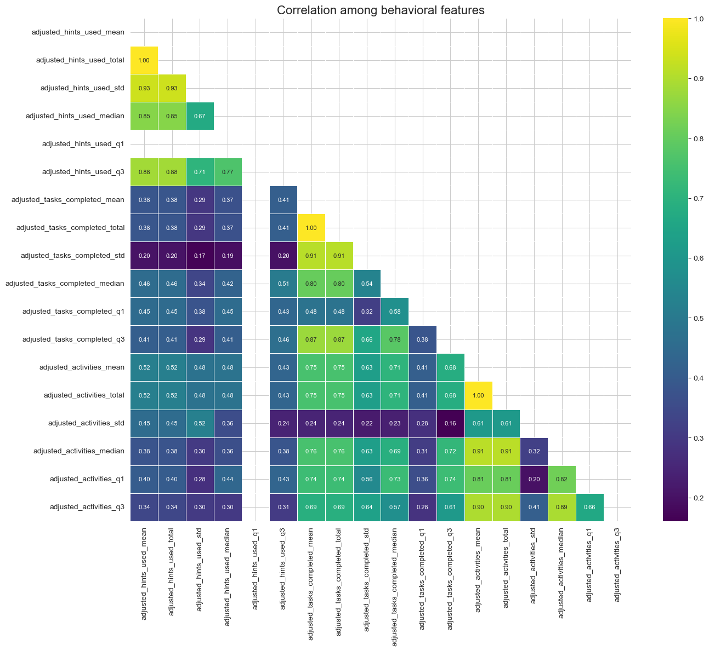

Now, we will perform an exploratory analysis of preprocessed data to uncover links between behavioral, self-reported and knowledge data. In particular, we will investigate How student behavior during the trajectory (as a proxy for metacognitive engagement) relates to self-reported perceptions (e.g., effort, cognitive load, perceived difficulties), and whether these behaviors predict or moderate perceived effectiveness and knowledge gain.
Correlations or other predictive relationships between behavioral patterns and: own effort, cognitive load, learning difficulty, effectiveness, test score
Clusters or patterns of student behavior during the trajectory (e.g., low engagement vs. high engagement students).
Does lower behavioral engagement correspond with lower perceived effectiveness and learning gain? This could indicate that students who do less (e.g., skip optional tasks, avoid hints) may also feel they learn less or actually gain less.
Remove correlated behavioral metrics (e.g., mean of task completed likely to be correlated with total of task completed)
Compute correlation between behavioral metrics and knowledge & perception measures.
Removing correlated behavioral features
Figure 1 displays correlation among behavioral features. We will remove one from each pair of behavioral features having correation > .90.
Code
import pandas as pdimport numpy as npimport seaborn as snsimport matplotlib.pyplot as plt# Step 1: Calculate the correlation matrixcorrelation_matrix = df_ep.corr().abs()# Step 2: Create a mask for the upper triangle of the correlation matrixmask = np.triu(np.ones_like(correlation_matrix, dtype=bool))# Step 3: Set a correlation threshold (commonly 0.7 or 0.8)threshold =0.8# Step 4: Find features with correlation greater than the thresholdto_drop = []for i inrange(len(correlation_matrix.columns)):for j inrange(i+1, len(correlation_matrix.columns)):if correlation_matrix.iloc[i, j] > threshold: colname = correlation_matrix.columns[j] to_drop.append(colname)# Remove duplicate features to dropto_drop =list(set(to_drop))#print(f"Features to drop: {"\n\t".join(to_drop)}")# Step 5: Create a new DataFrame without the correlated featuresdf_ep_uncorrelated = df_ep.drop(columns=to_drop)# Visualize the correlation matrix before removing features with correlation valuesplt.figure(figsize=(14, 12))plt.title("Correlation among behavioral features", fontsize=16)# Include the correlation values in the heatmapsns.heatmap(correlation_matrix, annot=True, cmap='coolwarm', mask=mask, fmt='.2f', annot_kws={"size": 8}, linewidths=0.5)plt.tight_layout()plt.show()

Figure 1: Behavioral correlated features
Our final set of features for subsequent analysis is given in the following table.
#
Feature Name
Description (Inferred)
1
adjusted_hints_used_mean
Mean number of hints used (adjusted)
2
adjusted_hints_used_q1
First quartile of hints used (adjusted)
3
adjusted_tasks_completed_mean
Mean number of tasks completed (adjusted)
4
adjusted_tasks_completed_q1
First quartile of tasks completed (adjusted)
5
adjusted_activities_mean
Mean activity metric (adjusted)
6
adjusted_activities_std
Standard deviation of activities (adjusted)
Compute correlation between behavioral features and knowledge & perception measures
We will apply the Spearman method to compute correlation between selected behavioral features and knowledge & perception measures. Figure 2 shows correlation measures along with their statistical significance displayed using *.
Code
import pandas as pdimport numpy as npimport matplotlib.pyplot as pltimport seaborn as snsfrom scipy import statsdef compute_correlation_with_significance(df, group1, group2, alpha=0.05):""" Compute correlation between features in group1 and group2, and determine statistical significance. Returns: - corr_matrix: correlation matrix - p_matrix: matrix of p-values - significant_matrix: boolean matrix indicating significant correlations """# Initialize matrices corr_matrix = pd.DataFrame(index=group1, columns=group2) p_matrix = pd.DataFrame(index=group1, columns=group2)# Calculate correlation and p-value for each pairfor feat1 in group1:for feat2 in group2:# Calculate Pearson correlation and p-value corr, p_value = stats.pearsonr(df[feat1].dropna(), df[feat2].dropna()) corr_matrix.loc[feat1, feat2] = corr p_matrix.loc[feat1, feat2] = p_value# Create a matrix indicating significant correlations significant_matrix = p_matrix < alphareturn corr_matrix, p_matrix, significant_matrixgroup1 = ['adjusted_hints_used_mean', 'adjusted_tasks_completed_mean', 'adjusted_tasks_completed_q1','adjusted_activities_mean', 'adjusted_activities_std']group2 = df_kno.columns.to_list() + df_sel.columns.to_list()# Compute correlation and significancecorr_matrix, p_matrix, significant_matrix = compute_correlation_with_significance( clean_df, group1, group2)corr_matrix = corr_matrix.astype(float)# Create a custom annotation matrixdef create_annot_matrix(corr_matrix, significant_matrix):"""Create annotation matrix with correlation values and stars for significance""" annot_matrix = corr_matrix.applymap(lambda x: f"{x:.2f}")# Add stars for significant correlationsfor i inrange(len(corr_matrix.index)):for j inrange(len(corr_matrix.columns)):if significant_matrix.iloc[i, j]: annot_matrix.iloc[i, j] = annot_matrix.iloc[i, j] +"*"return annot_matrix# Create annotation matrixannot_matrix = create_annot_matrix(corr_matrix, significant_matrix)# Plot the correlation heatmapplt.figure(figsize=(max(8, len(group2)), max(6, len(group1))))sns.heatmap( corr_matrix, annot=annot_matrix, fmt="", cmap="coolwarm", vmin=-1, vmax=1, linewidths=0.5, cbar_kws={"label": "Correlation Coefficient"})plt.title("Correlation Between Feature Groups (Spearman)", fontsize=14)plt.xlabel("Behavioral Features", fontsize=12)plt.ylabel("Knowledge & Perception Features", fontsize=12)plt.tight_layout()plt.show()# Optional: Display the actual p-values#print("P-values for correlations:")#print(p_matrix.round(4))
Figure 2: Spearman correlation between behavioral features and knowledge & perception measures
Exploring Behavioral Patterns Through Clustering
We will analyze behavioral data to identify emergent patterns using unsupervised clustering techniques. Our approach involves:
Determining the optimal number of clusters using the Silhouette method to evaluate cluster cohesion and separation.
Applying k-means clustering on the selected (uncorrelated) behavioral features to group participants based on similar behavioral profiles.
Finally, we will interpret the clusters by examining the distribution of key behavioral metrics within each group, uncovering meaningful insights into distinct behavioral patterns.
Code
from sklearn.preprocessing import StandardScaler, MinMaxScalerfrom sklearn.cluster import KMeansfrom sklearn.metrics import silhouette_scoreimport seaborn as sns# Assuming df is your DataFrame with Group 1 featuresgroup1_features = ['adjusted_hints_used_mean', 'adjusted_tasks_completed_mean', 'adjusted_tasks_completed_q1','adjusted_activities_mean', 'adjusted_activities_std']# 1. Preprocess dataX = clean_df[group1_features].copy()# Handle missing values if anyX = X.dropna()# Standard scalingscaler = MinMaxScaler()X_scaled = scaler.fit_transform(X)# 2. Determine optimal number of clusters using Silhouette methodsilhouette_scores = []k_range =range(2, 8) # Testing cluster numbers from 2 to 7for k in k_range: kmeans = KMeans(n_clusters=k, random_state=42, n_init=10) cluster_labels = kmeans.fit_predict(X_scaled) silhouette_avg = silhouette_score(X_scaled, cluster_labels) silhouette_scores.append(silhouette_avg)# Plot silhouette scoresplt.figure(figsize=(8, 4))plt.plot(k_range, silhouette_scores, 'bo-')plt.xlabel('Number of clusters')plt.ylabel('Silhouette Score')plt.title('Silhouette Method For Optimal k')plt.grid(True)plt.show()# Select optimal koptimal_k = k_range[np.argmax(silhouette_scores)]#print(f"Optimal number of clusters: {optimal_k}")# 3. Perform K-means clustering with optimal kkmeans = KMeans(n_clusters=optimal_k, random_state=42, n_init=10)cluster_labels = kmeans.fit_predict(X_scaled)clean_df['cluster'] = cluster_labels
Figure 3: Silhouette score for different k
Number of clusters
The optimal number of clusters is 2 following the Silhouette method.
Figure 4 shows distribution of behavioral features across two clusters. These distribution can be used for interpretation purposes.
Code
# Set stylesns.set_style("whitegrid")palette = sns.color_palette("viridis", n_colors=len(clean_df['cluster'].unique())) # Features to plotfeatures = ['adjusted_hints_used_mean', 'adjusted_tasks_completed_mean', 'adjusted_tasks_completed_q1','adjusted_activities_mean', 'adjusted_activities_std']for feature in features: plt.figure(figsize=(10, 6))# Box plot ax = sns.boxplot( x='cluster', y=feature, data=clean_df, palette=palette, width=0.5, showfliers=False# Hide outliers for cleaner visualization )# Add data points sns.stripplot( x='cluster', y=feature, data=clean_df, color='black', alpha=0.3, size=4, jitter=0.2 )# Add annotations plt.title(f'Distribution of {feature} by Cluster', fontsize=14, pad=15) plt.xlabel('Cluster', fontsize=12) plt.ylabel(feature, fontsize=12)# Add legend only onceif feature == features[0]: plt.legend() plt.tight_layout() plt.show()
(a) Adjusted Mean Hints Used
(b) Adjusted Mean Tasks Completed
(c) Adjusted Q1 Tasks Completed
(d) Adjusted Mean Activities
(e) Adjusted Std. Dev. of Activities
Figure 4: Distribution of Behavioral Metrics Across Clusters